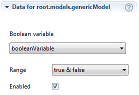

BooleanVariableRange
Purpose
The purpose of the is to edit a range of boolean values.
It can for example be used by a .
Class name
org.treez.study.atom.range.BooleanVariableRange
Construction
A new is created by:

Attributes
- Boolean variable: the corresponding variable that should be controlled by the range.
- Range: the range values:
true & false or false & true.
- Enabled: if the range is disabled it will not be used by studies. Enabling/disabling a range is also
possible through the context menu of the atom.